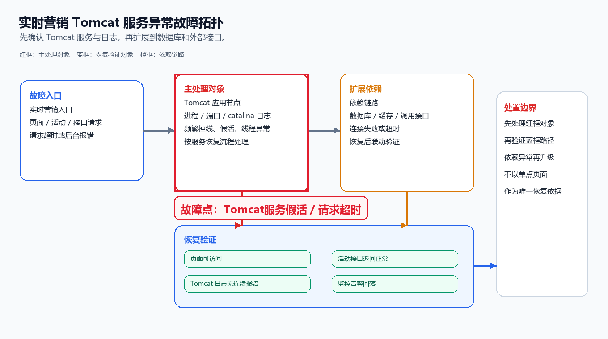

实时营销 - Tomcat服务异常 故障处置手册
故障拓扑

图中标注对象为 实时营销 在 Tomcat服务异常 场景下的主处理对象和恢复验证对象。处置时先确认主故障点，再扩展到依赖链路和业务验证，避免只根据单个告警对象做局部处理。
关键对象：
- 实时营销 应用节点：确认服务进程、端口、日志和页面状态。
- 依赖组件：结合故障现象检查数据库、中间件、缓存或外部接口。
- 业务验证入口：恢复后验证页面、接口、后台任务和日志链路。
故障点标注与恢复对象
红框为本次故障优先处理点；恢复后再按蓝框/依赖链路完成验证。
| 标注 | 故障点/现象 | 优先恢复动作 | 需要重启/执行的服务 |
|---|---|---|---|
| 红框 | 实时营销 Tomcat 应用节点进程、端口或 catalina 日志异常 | 确认假活后按应用服务恢复 | 实时营销 Tomcat 服务，现场脚本为准 |
| 橙框 | 数据库、缓存、外部接口依赖异常 | Tomcat 恢复后验证依赖链路 | 依赖侧只在确认异常时恢复 |
适用范围与故障判定
适用范围
遇到以下任一现象，进入本手册流程处理：
- 后台日志大量报错
- Tomcat服务频繁掉线
- 实时营销 出现与 Tomcat服务异常 相关的重复性故障现象。
- 页面、接口、任务或日志表现异常，需要先确认影响范围再执行恢复。
- 恢复后必须验证业务入口、关键日志和监控告警均已恢复。
判定规则
| 如果看到 | 先做什么 | 判断结论 |
|---|---|---|
| 页面或接口不可用 | 确认进程、端口和最近日志 | 先收敛到应用侧还是依赖侧 |
| 进程存在但页面打不开或请求超时 | 记录 PID，必要时保留线程现场，再 kill 旧进程并重启 | 按服务假活处理，不能只看进程存活 |
| 恢复后仍有告警 | 回查页面、接口、日志和监控 | 确认是否是假恢复或依赖未恢复 |
标准处置流程
- 记录告警时间、故障入口、受影响业务和当前监控状态。
- 确认服务进程、端口监听、资源水位和最近日志关键字。
- 按故障边界通知运维、厂商、开发或 DBA 介入处理。
- 执行恢复动作后回查页面、接口、任务和日志。
- 若短时间复发，保留现场并升级根因分析，不只重复重启。
关键检查命令
以下命令已按本故障场景去重整理；每条命令先说明用途，执行前按实际主机、路径、权限和变更流程确认。
查看相关进程
确认相关服务进程是否存活、是否存在重复或僵死进程。
bash
ps -ef | grep -Ei "tomcat" | grep -v grep查看服务状态
若服务由 systemd 管理，可直接确认当前状态与最近报错。
bash
systemctl status tomcat --no-pager查看最近日志
先看近 200 行日志，快速确认报错关键字与时间点。
bash
tail -n 200 /var/log/tomcat.log查看系统资源快照
先建立现场快照，便于判断是服务问题还是环境问题。
bash
uptime && free -h && df -h检查关键日志关键字
按实际日志路径替换，快速搜集错误、超时、异常退出信息。
bash
grep -Ei "error|exception|timeout|oom|fail" /var/log/tomcat.log | tail -n 50协同分工与通知口径
通知口径
谁负责什么
| 角色 | 负责范围 | 处置动作 |
|---|---|---|
| 一线运维 | 告警确认、现场操作、恢复验证 | 执行标准处置流程并记录结果 |
| 系统维护 / 厂商 | 应用服务、脚本、配置和程序逻辑 | 恢复服务并定位反复故障根因 |
| DBA / 平台支撑 | 数据库、中间件、主机和网络依赖 | 在扩展验证异常时介入处理 |
恢复验证清单
完成恢复动作后，按以下顺序验证：
- 实时营销 关键页面或入口可正常访问。
- 相关告警已消除或回落到正常阈值。
- 最近日志不再持续出现同类错误关键字。
- 服务进程、端口和核心接口均恢复正常。
- 恢复后至少完成一次关键业务路径验证。
根因与预防
根因判断
- 直接根因：Tomcat服务异常 导致 实时营销 关键业务路径异常。
- 应用表现：页面、接口、任务或日志链路异常，需要结合现场进一步定位。
- 处置边界：先按本手册主故障点恢复，再扩展检查依赖链路。
长期预防
- 补充进程、端口、错误率、接口耗时和关键日志监控。
- 固化标准恢复动作、升级边界和恢复验证要求。
- 对重复故障输出根因修复计划，不只依赖人工重启。
历史案例
| 序号 | 发生时间 | 故障现象 | 恢复手段 | 故障原因 | 处理时长 |
|---|---|---|---|---|---|
| 10 | 2026-01-28 16:09 | 后台日志大量报错 | 重启Tomcat服务 | tomcat 应用卡死 | 3min |
| 55 | 2026-05-06 16:19 | Tomcat服务频繁掉线 | 删除文件释放内存空间 | 部分文件偏大，导致内存占有过高 | 9min |